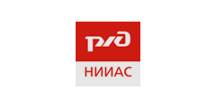

О компании
НПО Информ Транспорт
Коллектив компании работает на рынке предоставления IT-услуг и услуг в сфере промышленной автоматизации более 10 лет. За это время компанией был накоплен огромный опыт и профессионализм.
Основным направлением деятельности компании является разработка и внедрение систем, использующих передовые решения в области промышленной автоматизации и информатизации бизнес процессов.
Специалисты компании готовы быстро и качественно реализовывать комплексные проекты, творчески подходя к решению самых различных задач.
СВЛ ТР
Общие сведения о системе
Система взаимодействия АСУЖТ с тяговым подвижным составом посредством цифровой радиосвязи — СВЛ ТР принята в постоянную эксплуатацию в ОАО «РЖД» в 2012 году. СВЛ ТР предназначена для реализации двустороннего технологического (информационного) взаимодействия по защищенному каналу передачи данных между бортовыми локомотивными системами и отраслевыми информационными системами.
В ОАО «РЖД» система организует двусторонний обмен данными с бортовым оборудованием по каналам РОРС GSM с обеспечением защиты информации от несанкционированного доступа с использованием СКЗИ «Программный комплекс VipNet».
Система состоит из следующих компонентов: бортовое оборудование, встроенное программное обеспечение СВЛ ТР, серверное оборудование с прикладным программным обеспечением СВЛ ТР сетевого уровня.
Функции СВЛ ТР в локомотивных системах
Локомотивное оборудование интегрируется в бортовые системы управления, автоведения и регистрации параметров работы локомотива на программном или аппаратно-программном уровне. СВЛ ТР обеспечивает взаимодействие с локомотивными системами САУТ (КИО, К, ЦМ/485), УСАВП-Г, ИСАВП-РТ, КПД-3П(В,А), БЛОК (БЛОК-М), МПСУиД и РПДА-Т(ТМ) – т.е. с большинством отечественных бортовых локомотивных систем.
Основные функции системы в части передачи данных на борт – это доставка информации для энергоэффективного ведения поезда по графику с использованием Системы информирования машиниста (СИМ) и системы автоведения, а также сервисные функции в части передачи в бортовые системы электронных баз данных и файлов обновления прикладного программного обеспечения этих систем. Наиболее передовыми в этом направлении являются системы АСИМ-ЭММ и системы САУТ различных исполнений. Основные функции системы в части получения данных от бортовых систем – это передача телеметрии в отраслевые информационные системы: данные о техническом состоянии локомотива, эксплуатации и данные о поездке; данные в формате картриджа от систем РПДА, САУТ, КПД; данные от микропроцессорных систем управления, передающиеся в исходном виде. Подробно в таблице ниже:
| МПСУиД + БЛОК (БЛОК-М) | КИО-САУТ (САУТ-К, САУТ ЦМ/485) | АСИМ-ЭММ | РПДА-Т (ТМ) | УСАВП-Г (ИСАВП-РТ) | КПД-ЗПВ(А) | |
| Данные, передаваемые с локомотива | ||||||
| Скорость фактическая | ||||||
| Географическая координата | ||||||
| Железнодорожная координата | ||||||
| Состояние ЭПК | ||||||
| Сигнал АЛС | ||||||
| Параметры работы Автоведения | ||||||
| Данные о машинисте по карте МЭК | ||||||
| Расход (рекуперация) ТЭР | ||||||
| Напряжение контактной сети | ||||||
| Передача кодов самодиагностики системы | ||||||
| Информация о конфигурации бортовой системы (состав, версия ПО) | ||||||
| Передача кодов диагностики локомотива | ||||||
| Данные регистратора параметров в формате картриджа для АСУТ НБД-2 | ||||||
| Данные регистратора параметром с расшифровкой в СВЛ ТР (передача до сервера СВЛ ТР реализована) | при наличии блока "Ковчег" | |||||
| Данные, передаваемые на локомотив | ||||||
| Расписание движения поезда | ||||||
| Бланк ДУ-61 | ||||||
| Информация по вагонам из бланка ДУ-1 | ||||||
| Энергооптимальная кривая скорости движения | ||||||
| Информация о поезде | ||||||
| Информация о машинисте | ||||||
| Обновление программного обеспечения блоков системы по радиоканалу | ||||||
| Обновление БД электронных карт по радиоканалу |
| реализовано | в разработке | не применимо |
Система управления МПСУиД с функцией СИМ Оборудование интегрировано в состав системы управления МПСУиД в виде модуля МПД, устанавливаемого в шкаф системы БЛОК либо в виде блока МПД-Н в составе системы БЛОК-М. Реализована передача файлов регистрации параметров работы системы управления локомотива на сервер СВЛ ТР
Система АСИМ-ЭММ Функции СВЛ ТР интегрированы на программном уровне в блок БСГД-7. Если на локомотиве одновременно установлены системы КИО-САУТ и АСИМ-ЭММ осуществляется информационное взаимодействие этих систем. Реализована передача файлов регистрации параметров поездки САУТ в формате картриджа на сервер СВЛ ТР для дальнейшей расшифровки в АСУТ НБД-2.
Система ИСАВП-РТ с функцией СИМ Оборудование интегрировано в состав системы в виде блока МПД-Н. Реализована передача файлов регистрации параметров работы системы управления локомотива МСУД на сервер СВЛ ТР. В настоящее время на сервере реализуется интеграция расшифровщика.
Система УСАВП-Г с функцией СИМ Оборудование интегрировано в состав системы в виде блока МПД-Н
Система РПДА-Т(ТМ) Функции СВЛ ТР интегрированы на программном уровне в блоке БР7м (на первых 200 секциях в составе системы в виде блока МПД-Н). Реализована передача файлов регистрации параметров работы системы РПДА в формате картриджа на сервер СВЛ ТР.
Система КПД-3ПВ(ПА) Оборудование МПД-Н интегрировано с КПД. Реализована передача файлов регистрации параметров поездки в формате картриджа на сервер СВЛ ТР для дальнейшей расшифровки в АСУТ НБД-2. С июля 2019 в опытной эксплуатации находятся несколько локомотивов, передающих данные в формате картриджа от системы КПД-3ПВ. Проведены соответствующие испытания.
Сведения об оснащении парка
Всего в ОАО «РЖД» оснащено бортовыми системами с функциями СВЛ ТР более 10,5 тысяч секций ТПС и электропоездов.
В 2019 году реализованы технические решения, которые позволяют одновременно подключать к бортовому оборудованию СВЛ ТР несколько локомотивных систем по интерфейсам CAN, RS-485 и Ethernet.
Поставлены на производство модульные варианты исполнения блоков МПД-Н, имеющие до 8 каналов связи GSM и до 8 линий CAN и Ethernet, RS-232, RS-485. Данное оборудование используется на электропоездах Ласточка, обслуживающих Московское центральное кольцо и в новой Единой микропроцессорной системы управления и безопасности движения МПСУ-БД.
Бортовое оборудование СВЛ ТР производится по Техническим Условиям в соответствии с ГОСТ 15.902-2014 «Межгосударственный стандарт. Система разработки и постановки продукции на производство. Железнодорожный подвижной состав. Порядок разработки и постановки на производство», согласованным в ОАО «РЖД».
Коммуникационный сервер СВЛ ТР (СВПС АСУТ НБД-2).
Текущее состояние вопроса развития серверной части СВЛ ТР
На серверном уровне СВЛ ТР обеспечивает стыковку с информационными системами ОАО «РЖД» – АСОУП, АСУТ НБД-2, АПК Эльбрус, ГИД Урал-ВНИИЖТ, ЕГИС ТПС, ИСУЖТ, а также с информационными системами компаний, обеспечивающих строительство и сервисное обслуживание локомотивов – АО «Трансмашхолдинг» и ООО Уральские локомотивы.
Сайт СВЛ ТР
Сайт Системы доступен в СПД ОАО «РЖД». Сайт реализует следующие функции:
-
Интерактивная карта:
- мониторинг текущей дислокации парка
- отображение истории перемещения (трека) локомотива
- данные об эксплуатационном состоянии локомотива, бригаде, межремонтных пробегах
- данные о поезде, вагонах
- диагностические данные системы управления МПСУиД локомотива, данные о техническом состоянии локомотивов
-
Отчеты о техническом состоянии и эксплуатации локомотивов:
- диагностические сообщения, информация о техническом состоянии локомотива
- история эксплуатации локомотива
- информация об использовании систем автоведения
- работоспособность оборудования ресурсосбережения
- работоспособность СИМ, данные самодиагностики СИМ и АСИМ
-
Отчеты о расходе ТЭР:
- расход и рекуперация электроэнергии с привязкой к поездкам (приемка – сдача)
- данные по дизельному топливу (масса, объем, температура, плотность)
-
Информация от систем регистрации параметров:
- файлы, генерируемые бортовыми системами САУТ (КИО, К, ЦМ/485), УСАВП-Г, ИСАВП-РТ, КПД-3П(В,А), МПСУиД и РПДА-Т(ТМ)
- Веб интерфейс подсистемы удаленного обновления баз данных и прикладного программного обеспечения оборудования СВЛ ТР и ряда бортовых систем
- Веб интерфейс управления НСИ
- Веб интерфейс управления функциями администрирования сайта
Всего на сайте реализовано более 40 отчетов.
Развитие СВЛ ТР
Ежегодно специалистами нашей компании ведется работа по расширению функциональности системы, как по требованиям заказчиков, так и в инициативном порядке. В 2021 году мы приступили к разработке подсистемы защиты информации СВЛ ТР, для соответствия требованиям Федерального закона от 26 июля 2017 г. № 187-ФЗ «О безопасности критической информационной инфраструктуры Российской Федерации», с учетом передачи критической управляющей информации, нарушение доступности и целостности которой может привести к нарушению непрерывности перевозочного процесса и нанесению существенного материального ущерба в случае деструктивных воздействий на критическую управляющую информацию. Дорабатываются технологии обеспечения локомотивной бригады и систем автоведения данными, повышающими эффективность ведения поезда в части повышения безопасности и энергоэффективности. Развиваются функции, направленные на задачи, связанные с сервисным обслуживанием локомотивов. Одной из наиболее приоритетных разработок является реинжиниринг СВЛ ТР с использованием отечественного программного обеспечения, направленный на обеспечение бесперебойной работы системы при обмене данными со всем парком (более 33 тыс. секций), в том числе при применении функций дублирования передачи данных и при передаче ответственных команд.
УЛ Сервис
Информационно-аналитическая система управления надёжностью моторвагонного подвижного состава
Назначение системы:
Автоматизация процессов управления надежностью подвижного состава путем анализа информации об эксплуатационной работе, информации поступающей с бортовых систем управления и диагностики, информации о неисправностях и выполненных ремонтах. Результатом анализа данных являются рекомендации о принятии управленческих решений, направленных на снижение издержек на гарантийное и сервисное обслуживание подвижного состава, выпускаемого и находящегося на сервисном обслуживании ООО «Уральские локомотивы»
Основные функции:
- Управление процессами сервисного и гарантийного обслуживания локомотивов производства ООО «Уральские локомотивы»
- Сбор и анализ эксплуатационных показателей, таких как КТГ и история эксплуатационных состояний локомотивов
- Ведение электронного паспорта подвижного состава
- Передача диагностических данных в режиме онлайн от бортовых систем диагностики и от ИС «CORMAP» (Siemens)
- Электронный журнал ТУ-152, онлайн передача информации о текущем техническом состоянии электровоза
- Организация учёта и расхода ТМЦ на ремонты
- Ведение актуального архива технологических операций
Этапы разработки:
Разработка системы ведётся с марта 2017 года, когда, в рамках Договора между ООО «Уральские локомотивы» и ООО «ТрансИнфоПроект», был реализован функционал передачи данных из системы CORMAP по электропоездам Ласточка. В систему были добавлены заказ-наряды и паспорта электропоездов, на интерактивной карте начала отображаться их дислокация, и появилась возможность составления различных отчётов по техническому состоянию и дислокации электропоездов. После этого, в систему была добавлена информация по дислокации и эксплуатационным состояниям электровозов серий 2ЭС6, 2ЭС7, 2ЭС10.
В 2017-2019 годах были разработаны несколько функциональных разделов позволяющих управлять сервисным обслуживанием локомотивов. В систему УЛ-Сервис начала поступать информация от внешних систем АСОУП, СВЛ ТР, Omega и данные от бортовых систем подвижного состава. Было организовано взаимодействие с Информационной системой расчёта стоимости жизненного цикла подвижного состава (ИС РСЖЦ). Был добавлен раздел планирования ремонтов, включающий Калькулятор программы ремонтов электровозов, и созданы механизмы отслеживания выхода ТПС с гарантийного обслуживания. Разработана и реализована технология передачи информации о текущем техническом состоянии электровоза в формате электронного журнал ТУ-152. Разработана и реализована технология складского учёта деталей, запасных частей и ТМЦ. Обмен данными с внешней системой Omega (склад), создание накладных, перемещение ТМЦ между складами и цехами, заказ ТМЦ на ремонт и списание.
Перспективы развития:
В настоящее время ведётся разработка алгоритмов автоматизации работы Экспертно-аналитического отдела. Создаются механизмы сбора исходной статистической информации по отказам электровозов. Разрабатывается накопитель статистической информации, и алгоритмы формирования экспертно-аналитического отчётов.
Ведётся разработка механизмов визуализации и графического представления элементов конструкции электровозов серии 2ЭС6 и 2ЭС10, а так же сопроводительной технической и технологической документации.
Для складов сервиса разрабатываются механизмы и алгоритмы формирования неснижаемого запаса ТМЦ, с оповещением пользователей о приближении количества ТМЦ к уровню неснижаемого запаса.
Галерея скриншотов системы:
ЕИС КТС
Общие сведения о системе
Единая интеллектуальная система контроля технического состояния тягового подвижного состава – ЕИС КТС разработана и запущена в постоянную эксплуатацию в АО «Трансмашхолдинг» в 2019 году. ЕИС КТС предназначена для сбора и хранения всех регистрируемых параметров работы тягового подвижного состава, а также первичной обработки, анализа и обмена данными с информационными системами АО «Трансмашхолдинг». Система основывается на первичных данных от бортовых систем: локомотивных микропроцессорных систем управления, систем Автоведения, информирования машиниста, регистраторов параметров, а также на информации об эксплуатации локомотивов от информационных систем ОАО «РЖД». В соответствии с соглашением об электронном обмене данными между ОАО «РЖД» и АО «Трансмашхолдинг» и проектом технических решений было организовано взаимодействие ЕИС КТС с системами АСОУП и СВЛ ТР через систему СВПС АСУТ НБД-2 c дальнейшим переходом на информационное взаимодействие с АС «Доверенная среда».
Задачи ЕИС КТС
В рамках работ по созданию ЕИС КТС были выполнены следующие задачи:
- Организация канала передачи данных в соответствии с требованиями информационной безопасности, предъявляемыми в ОАО «РЖД» и АО «Трансмашхолдинг».
- Доработка и разработка встроенного программного обеспечения бортового локомотивного оборудования:
- доработка систем регистрации и анализа параметров работы тепловоза и учета дизельного топлива (РПДА-Т, РПДА-ТМ) для передачи в СВЛ ТР всех первичных данных формируемых, и регистрируемых бортовыми микропроцессорными системами управления тепловозов (расширенная телеметрия)
- доработка систем регистрации и анализа параметров работы тепловоза и учета дизельного топлива (РПДА-Т, РПДА-ТМ) для передачи данных в СВЛ ТР в формате картриджа (базовая телеметрия)
- доработка систем Автоведения (УСАВП) для передачи в СВЛ ТР всех первичных данных, формируемых и регистрируемых бортовыми микропроцессорными системами управления электровозов (расширенная телеметрия)
- доработка систем Автоведения (УСАВП) для передачи данных в оборудование СВЛ ТР в формате картриджа (базовая телеметрия)
- доработка встроенного программного обеспечения микропроцессорных систем управления локомотивов 2(3)ЭС4К, 2(3,4)ЭС5К, 2ТЭ116У (расширенная телеметрия)
- доработка встроенного программного обеспечения бортового локомотивного оборудования СВЛ ТР для передачи данных в объеме базовой и расширенной телеметрии
- обновление программного обеспечения бортового локомотивного оборудования для реализации описанных выше возможностей
- Создание в ЕИС КТС архитектуры базы данных для хранения больших объёмов данных МСУ, РПДА-Т (ТМ), Автоведения, АСИМ-ЭММ и СВЛТР, механизмов их верификации и проверки на корректность и целостность посредством СУБД MS SQL.
- Реализация механизма получения данных из системы АСОУП посредством клиента DB2.
- Реализация механизма получения данных из системы СВПС АСУТ НБД-2 посредством клиента веб-сервиса, использующего разработанное API.
- Адаптация (внедрение) модуля распаковки, расшифровки и хранения данных Clover SmartMaintenance для бинарных данных МСУ (2ЭС4К, 3ЭС5К, 2ТЭ116У).
- Адаптация (внедрение) сервиса API Gateway доступа к данным системы АСОУП и бортовых микропроцессорных систем в Clover Smart Maintenance, предусматривающего функциональность унифицированного API интерфейса, функциональность управления конфликтами и ошибками с обеспечением функциональной и информационной безопасности.
- Интеграция в ЕИС КТС адаптированного модуля распаковки, расшифровки и хранения данных Clover SmartMaintenance для бинарных данных МСУ.
САОЭ МЦК
Наименование системы:
Аналитическая система оценки и контроля уровня небаланса электроэнергии и автоматизированной оценки удельного расхода электроэнергии электроподвижного состава на Московском центральном кольце. Совместная разработка с компанией ООО «Энфорс Энерго».
Назначение системы:
Мониторинг небаланса, расхода и возврата электроэнергии на тягу поездов Ласточка при обслуживании пассажиропотока на МЦК. Система мониторинга движения электропоездов по МЦК, позволяет осуществлять анализ факторов, влияющих на небаланс расхода и возврата электроэнергии на тягу электропоездов на Московском центральном кольце.
Основные функции:
- Сбор и обработка данных о потреблении электроэнергии электропоездами серии ЭС2Г с № 45 и выше, курсирующим на МЦК
- Получение информации о выдаваемой электроэнергии с тяговых подстанций из системы АСКУЭ ОАО «РЖД»
- Оценка небаланса электроэнергии между расходом на тяговых подстанциях и потреблением на тягу поездов
- Оценка эффективности расхода ТЭР машинистами на тягу поездов
- Вывод результатов анализа небаланса электроэнергии в виде графиков и диаграмм
- Ведение нормативно-справочной информации
Галерея скриншотов системы:
Программное обеспечение
Программное обеспечение для бортового оборудования Системы взаимодействия АСУЖТ с тяговым подвижным составом посредством цифровой радиосвязи (Бортовое ПО СВЛ ТР)
Бортовое ПО СВЛ ТР различных модификаций является неотъемлемой частью бортового оборудования СВЛ ТР.
Основные функции Бортового ПО СВЛ ТР:
- обмен данными по радиосвязи с сервером СВЛ ТР с обеспечением защиты информации от несанкционированного доступа с использованием средства криптографической защиты информации (СКЗИ)
- удалённое обновление Бортового ПО СВЛ ТР с сервера СВЛ ТР с использованием СКЗИ
- обмен данными по интерфейсам CAN, RS-232, RS-485, Ethernet со сторонними бортовыми системами
Бортовое ПО СВЛ ТР и его модификации предназначено для использования в бортовом оборудовании СВЛ ТР, имеющего следующие основные характеристики:
- процессор – ARMv7
- ОЗУ – от 512 до 1024 Мбайт
- ПЗУ – от 4 до 8 Гбайт
- ОС на базе ядра Linux
По вопросам приобретения или для уточнения возможностей Бортового ПО СВЛ ТР обращайтесь по электронной почте info@trans-ip.ru или по телефону +7 495 020-23-75
Краткое описание Бортового ПО СВЛ ТР
Информация по эксплуатации Бортового ПО СВЛ ТР
Свидетельство на Бортовое ПО СВЛ ТР
Программное обеспечение Системы взаимодействия АСУЖТ с тяговым подвижным составом посредством цифровой радиосвязи (ПО СВЛ ТР)
Основные функции ПО СВЛ ТР:
- организация взаимодействия с бортовым локомотивным оборудованием СВЛ ТР по протоколу TCP
- получение и хранение данных телеметрии, диагностической и технологической информации от бортового локомотивного оборудования СВЛ ТР
- организация и проведение удалённого обновления программного обеспечения бортового оборудования
- предоставление веб-интерфейса пользователям системы посредством веб-приложения СВЛ ТР
Минимальные требования к аппаратному обеспечению для функционирования серверной части ПО СВЛ ТР при взаимодействие с TCP-клиентами в количестве ста штук:
- процессор Intel Core i5 с количеством ядер не менее 4, с тактовой частотой 2,5 Гц
- оперативная память – 8 Гбайт
- высокоскоростная дисковая подсистема объёмом 100 Гбайт
- сетевой адаптер Ethernet со скоростью 1 Гбит/с
- внешний накопитель для резервного копирования БД объёмом 100 Гбайт
Минимальные требования к аппаратному обеспечению рабочих мест пользователей веб-сайта СВЛ ТР:
- двухъядерный процессор архитектуры Intel Pentium IV или более современной с тактовой частотой не менее 1,7 ГГц
- оперативная память не менее 512 Мбайт
- видеомонитор цветной с разрешением не менее 1024х768 с размером экрана по диагонали не менее 17”
- манипулятор типа мышь
- клавиатура стандарта IBM, русифицированная «ЙЦУКЕН»
- сетевой адаптер Ethernet со скоростью не менее 1000 Мбит/с
- источник бесперебойного питания
По вопросам приобретения или для уточнения возможностей ПО СВЛ ТР обращайтесь по электронной почте info@trans-ip.ru или по телефону +7 495 020-23-75
Видеоролики
Наименование:
Демонстрационные видеоматериалы по выполнению технологических процессов при приемке локомотивов, эксплуатации систем ресурсосбережения и о работе с электронным маршрутом машиниста.
Назначение:
Видеоролики предназначены для совершенствования системы подготовки локомотивных бригад путём централизованного обеспечения видеоинструкциями, описывающими выполнение операций приемки локомотивов и эксплуатации основных бортовых локомотивных систем, а также ознакомление с технологией работы электронного маршрута машиниста. Заказчиком видеороликов является Дирекция тяги – филиал ОАО «РЖД». Заказчику принадлежат исключительные права на использование и публикацию видеороликов на доступных хостингах.
Описание:
Видеоряд создаётся на основе 3D-моделей локомотивов, людей, объектов инфраструктуры и пейзажей с использованием реалистичных текстур и высокополигонального моделирования. Операции сопровождаются дикторским голосом. Последовательность операций соответствует стандартным операционным картам, и создаётся на основе чернового видеоматериала, отснятого в локомотивных депо. Готовый видеоролик демонстрирует максимально приближенные к реальным действия работников по приёмке локомотивов, по эксплуатации систем ресурсосбережения, и по работе с электронным маршрутом машиниста.
Каждая операция содержит:
- название операции
- описание действий локомотивной бригады
- требования охраны труда
- порядок выполнения операции
- описание возможных неисправностей систем и действий локомотивной бригады при их выявлении
Разрешение видеороликов 1280 на 720 пикселей (HD), кодек Н.264, 25 кадров/сек, битрейт 4 Мбит/с. Воспроизведение видеороликов обеспечивается стандартными мультимедийными средствами Windows (Windows Media Player). Всего изготовлено более тридцати видеороликов, средняя продолжительность одного ролика 10-15 минут.
Галерея скриншотов:
Наши партнеры
ОАО
"Российские железные дороги"
АО "Трансмашхолдинг"
ООО "Уральские локомотивы"
АО "ВНИИЖТ"
ООО "АВП Технология"
АО "НИИАС"
ООО "Системы
Взаимодействия с Локомотивом"
ООО "КЛОВЕР Групп"
НАО "Инфоком"
ООО "Лайка софт"
Siemens AG
ООО "НПО САУТ"
ООО "Тяговые компоненты"
АО "Стойленский ГОК"
ООО "ЛокоТех"
ООО "НПК СО"
ООО ""Эльга-Транс""
ООО "НПО Информ Транспорт"
Как к нам проехать:
г. Москва, ул. Большая Андроньевская, д. 17
Ближайшие станции метро:
Пролетарская
Площадь Ильича
Римская
Как написать:
109544, г. Москва, ул. Большая Андроньевская, д. 17, оф. 435
генеральный директор